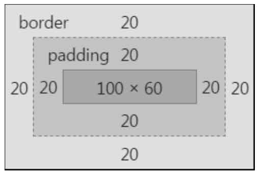

第一章笔记
本书的CSS世界特指的是CSS2.1的世界。
CSS世界观
HTML是魔法石（被施法的，说变就变），选择器是法器，CSS属性就是魔法师，CSS各种属性值就是魔法技能。
浏览器是魔法师的王国，王国会不断更新法律法规（版本）。
操作系统是平行世界，不同世界的浏览器王国命运不同。
CSS世界的诞生就是为图文信息展示服务的。
层叠的概念
CSS（层叠样式表）的“层叠”就是：样式可以层层累加，比方说页面元素都继承了12px的大小，某标题可以设置成14px进行叠加。
何为“流”
“文档流”去掉“文档”二字，称为“流”。
“流”是CSS世界引导元素排列和定位的一条看不见的“水流”，可以理解为现实世界的物理规则，比如<div>是容器里的水，<span>是容器里漂浮的木头。
“文档流”默认的流向是“一江春水向东流”和“飞流直下三千尺”，但流向是可以改变的。
什么是流体布局
“流体布局”是利用元素“流”的特性实现的各类布局效果，往往具有自适应性。
“流体布局”并不等同于自适应布局，它是“自适应布局”的子集，要比“自适应布局”狭窄得多。
第二章
当某个浏览器中出现与其他浏览器不一样的行为或样式表现的时候，我们总会习惯把这种不一样的表现认为是浏览器的bug。
但在CSS世界，这种认识是狭隘的。
就像法律存在空白，Web标准也是不可能面面俱到的，也会存在规范之外的应用场景，此时浏览器表现的差异并不是浏览器的bug，而是“未定义行为”。
第三章
块级元素
注意：“块级元素”和“display为block的元素”不是一个概念！“块级元素”比“display为block的元素”范围更广！！
常见的块级元素：<div>、<li>、<table>等。它们都是“块级元素”，都符合一个水平流上只能单独显示一个元素，多个块级元素则换行显示。
为什么 list-item 元素会出现项目符号
CSS 造物主原本只想世界只有块级盒子和内联盒子，块级盒子负责结构，内联盒子负责内容。
结果，半路杀出个 list-item，默认要显示项目符号，一个块级盒子解释不了，怎么办？
造物主灵机一动，加了个盒子。
之所以 list-item 元素会出现项目符号是因为生成了一个“附加盒子”，学名为“标记盒子”，专门放圆点、数字这些项目符号的。
所有的“块级元素”都有一个“主块级盒子”，而 list-item 元素多了一个“标记盒子”。
又碰到个特殊性别的 display: inline-block 元素，现有的盒子无法解释，怎么办？造物主灵机一动，又加了个盒子。
每个盒子都有两个盒子：外在盒子和内在盒子。
外在盒子负责是一行显示还是换行显示，内在盒子负责宽高、内容呈现等。
内在盒子更专业的名称叫做“容器盒子”。
display:block 的元素的盒子实际由外在的“块级盒子”和内在的“块级容器盒子”组成。
display:inline-block 的元素的盒子实际由外在的“内联盒子”和内在的“块级容器盒子”组成。
display:inline 的元素的盒子内外都是“内联盒子”。
因此，display:block 应该脑补为 display:block-block 。
display:table 应该脑补成 display:block-table，我们平时的写法实际上是一种简写。
在 CSS3 最新的世界中，CSS 规范的撰写者们使用了另外一个名词来表示这个内在盒子，就是“flow”，也就是本书的核心“流"。
因此，display:block 更规范的脑补应该是 display:block flow。注意中间是空格。
width/height 作用在哪个盒子
答案是内在盒子，也就是“容器盒子”。
深藏不露的width：auto
width：auto 的 4 种不同宽度表现
1、充分利用可用空间：宽度默认是 100% 于父级容器。
2、收缩与包裹：典型代表是浮动、绝对定位、inline-block 元素或 table 元素，英文直译叫“收缩到合适”，即“包裹性”，CSS3 的 fit-content 指的就是这种宽度表现。
3、收缩到最小：在 table-layout:auto 的表格中，当每一列空间都不够时，文字能断就断，但中文随便断，英文单词不能断。
4、超出容器限制（有明确的 width 相关设置，就不会超出容器限制）：
特殊情况，内容很长的连续英文和数字，或者内联元素被设置了 white-space:no-wrap（即文本换行无效），则表现为：

内部尺寸与外部尺寸
在 CSS 世界中，盒子分“内在盒子”和“外在盒子”，显示也分“内部显示”和“外部显示”，同样地，尺寸也分“内部尺寸”和“外部尺寸”。
“内部尺寸”英文写作“Intrinsic Sizing"，“外部尺寸”英文写作“Extrinsic Sizing"。
内部尺寸：尺寸由内部元素决定。
外部尺寸：宽度由外部元素决定。
width：auto 的 4 种不同宽度表现中，第一种宽度表现默认宽度 100% 显示是外部尺寸，其余宽度表现都是内部尺寸。
这唯一的“外部尺寸”是“流”的精髓所在！
外部尺寸与流体特性（块级）
1、正常流宽度
在页面中随便扔一个 <div> 元素，其尺寸表现就会和这水流一样铺满容器。
这就是 block 容器的流特性。这种特性，所有浏览器的表现都是一致的。
因此，我就实在想不通，为何那么多网站或同行会有类似下面的 CSS 写法。
a {
display: block;
width: 100%;
}
<a>元素默认 diplay 是 inline，所以，设置 display:block 使其块状化绝对没有问题，但后面的 width:100% 就没有任何出现的必要了。
“鑫三无准则”：“无宽度，无图片，无浮动”。
“无宽度”原因：表现为“外部尺寸”的块级元素一旦设置了宽度，流动性就丢失了。
流动性是一种 margin/border/padding 和 content 内容区域分配水平（和垂直）空间的机制。

<div class="nav">
<a href="" class="nav-a">导航1</a>
<a href="" class="nav-a">导航2</a>
<a href="" class="nav-a">导航3</a>
</div>
<h4>width:100%</h4>
<div class="nav">
<a href="" class="nav-a width">导航1</a>
<a href="" class="nav-a width">导航2</a>
<a href="" class="nav-a width">导航3</a>
</div>
.width {
width: 100%;
}
.nav {
width: 240px;
background-color: #cd0000;
}
.nav-a {
display: block;
margin: 0 10px;
padding: 9px 10px;
border-bottom: 1px solid #b70000;
border-top: 1px solid #de3636;
color: #fff;
}
.nav-a:first-child { border-top: 0; }
.nav-a + .nav-a + .nav-a { border-bottom: 0;}
上下两个导航均有 margin 和 padding 。
前者无 width 设置，完全借助流特性，后者宽度width:100%。
结果，后者的尺寸超出了外部的容器，完全就不像“水流”那样完全利用容器空间，即所谓的“流动性丢失”。
当然，实际开发的时候，是不会设置宽度 100% 的，毕竟有显示问题。
可能有人发挥自己天才般的计算能力，通过“容器宽度−水平 padding−水平 margin=?”重新设定具体的宽度。
于是，最终的 CSS 代码如下：
.nav {
width: 240px;
background-color: #cd0000;
}
.nav-a {
display: block;
/* 200px = 240px - 10px*2 - 10px*2 */
margin: 0 10px;
padding: 9px 10px;
border-bottom: 1px solid #b70000;
border-top: 1px solid #de3636;
color: #fff;
}
典型的“砌砖头”“搭积木”式思维方式！
虽然说最后的效果是一样的，但是，如果模块的宽度变化了，哪怕只变了 1 像素， width 也需要重新计算一遍。
如果借助流动性无宽度布局，那么就算外面容器尺寸变化，我们的导航也可以自适应，这就是充分利用浏览器原生流特性的好处。
因此，记住“无宽度”这条准则，少了代码，少了计算，少了维护，何乐而不为呢？
2、格式化宽度
默认情况下，绝对定位元素的宽度表现是“包裹性”。
对于非替换元素，当 left/right 或 top/bottom 对立方位的属性值同时存在时，
元素的宽度表现为“格式化宽度”，其宽度大小相对于最近的具有定位特性（position 属性值不是 static）的祖先元素计算。
非替换元素自适应可使用：absolute、fixed。
例如，下面一段 CSS 代码：
div { position: absolute; left: 20px; right: 20px; }
假设该<div>元素最近的具有定位特性的祖先元素的宽度是 1000 像素，则这个<div>元素的宽度是 960（即 1000−20−20）像素。
此外，和上面的普通流一样，“格式化宽度”具有完全的流体性，
也就是 margin、border、padding 和 content内容区域同样会自动分配水平（和垂直）空间。
“格式化宽度”水很深，同时也非常实用。
内部尺寸与流体特性（内联级）
1、包裹性
“包裹性”是对“shrink-to-fit”（收缩到合适）理解后的一种称谓。
“包裹性”也是 CSS 世界中很重要的流布局表现形式。
“包裹性”，除了“包裹”，还有“自适应性”。
“自适应性”是区分后面两种尺寸表现很重要的一点。
“自适应性”指的是元素尺寸由内部元素决定，但永远小于“包含块”容器的尺寸（除非容器尺寸小于元素的“首选最小宽度”）。
换句话说就是，“包裹性”元素冥冥中有个 max-width:100% 罩着的感觉（注意，此说法只是便于大家理解，实际上是有明显区别的）。
因此，如果一个元素 display 属性值是 inline-block，那么即使其里面内容再多，只要是正常文本，宽度也不会超过容器。
于是，图文混排的时候，我们只要关心内容，除非“首选最小宽度”比容器宽度还要大。
按钮通常以如下两种形式出现在页面代码中：
<button>按钮</button>
<input type="button" value="按钮">
按钮就是 CSS 世界中极具代表性的 inline-block 元素，可谓展示“包裹性”最好的例子，
具体表现为：按钮文字越多宽度越宽（内部尺寸特性），但如果文字足够多，则会在容器的宽度处自动换行（自适应特性）。
容器宽度定死，inline-block 子元素宽度 auto，inline-block 子元素碰到容器最大宽度，撞了南墙会乖乖换行。
按钮会自动换行？没错，你之所以没印象，可能是因为：
- 实际项目中，按钮上的文字个数比较有限，没机会换行；
- <button>标签按钮才会自动换行，<input>标签按钮，默认white-space:pre，是不会换行的，需要将pre值重置为默认的normal。
<div class="box">
<button>按钮</button>
</div>
<div class="box">
<button>文字再多一点</button>
</div>
<div class="box">
<button>按钮文字越多宽度越宽（包裹，内部尺寸特性），但不会超过容器宽度（自适应性）</button>
</div>
.box {
width: 240px;
margin: 20px auto;
}
“包裹性”对实际开发有什么作用呢？
请看这个需求：
页面某个模块的文字内容是动态的，可能是几个字，也可能是一句话。然后，希望文字少的时候居中显示，文字超过一行的时候居左显示。
<div class="box">
<p id="conMore" class="content">文字内容</p>
</div>
.box {
padding: 10px;
background-color: #cd0000;
text-align: center;
}
.content {
display: inline-block;
text-align: left;
}
文字少时
文字多时
除了 inline-block 元素，浮动元素以及绝对定位元素都具有包裹性，均有类似的智能宽度行为。
2、首选最小宽度
“首选最小宽度”，指的是元素最适合的最小宽度。
接着上面的例子，在上面例子中，外部容器的宽度是 240 像素，假设外部容器宽度是 0，里面的 inline-block 元素的宽度会是多少？
是 0 吗？不是。
在 CSS 世界中，图片和文字的权重要远大于布局，
因此，CSS 的设计者不会让图文在 width:auto 时宽度变成 0 的，此时所表现的宽度就是“首选最小宽度”。
东亚文字（如中文）最小宽度为每个汉字的宽度
中文汉字与最小宽度效果
西方文字最小宽度由特定的连续的英文字符单元决定。
并不是所有的英文字符都会组成连续单元，一般会终止于空格（普通空格）、短横线、问号以及其他非英文字符等。
连续字符换行点示意

类似图片这样的替换元素的最小宽度就是该元素内容本身的宽度。
“首选最小宽度”对我们实际开发有什么作用呢？
可以让我们遇到类似现象的时候知道原因是什么，方便迅速对症下药，其他就没什么用了。
有点失望？那就举个利用“首选最小宽度”构建图形的例子吧。
请问，如何使用一层 HTML 标签分别实现下图所示的“凹”和“凸”效果（注意要兼容IE8）？
由于要兼容 IE8， CSS新世界中图形构建利器的盒阴影和背景渐变全都没有用武之地
我们可以利用“首选最小宽度”的行为特点把需要的图形勾勒出来。
<span class="ao"></span>
<span class="tu"></span>
.ao,.tu {
display: inline-block;
width: 0;
font-size: 14px;
line-height: 18px;
margin: 35px;
color: #fff;
}
.ao:before,.tu:before {
outline: 2px solid #cd0000;
font-family: Consolas, Monaco, monospace;
}
.ao:before {
content: "love你love";
}
.tu {
direction: rtl;
}
.tu:before {
content: "我love你";
}
图形由文字区域勾勒而成
3、最大宽度
最大宽度就是元素可以有的最大宽度。
“最大宽度”实际等同于“包裹性”元素设置 white-space:nowrap 声明后的宽度。
如果内部没有块级元素或者块级元素没有设定宽度值，则“最大宽度”实际上是最大的连续内联盒子的宽度。
什么是连续内联盒子？
可以简单地将其理解为 display 为 inline、inline-block、inline-table 等元素。
“连续内联盒子”指的全部都是内联级别的一个或一堆元素，中间没有任何的换行标签<br>或其他块级元素。
下图所示是一段很平常的 HTML 片段的“连续内联盒子”信息标注图
其中，有 3 处连续内联盒子，分别是：
• <br> 前面的 4 个内联盒子组合；
• <br> 后面“我是下一行”字样所在的匿名内联盒子；
• 最后块状 <p> 标签内的内联盒子，也就是一段文本。
此时“最大宽度”就是这 3 个连续内联盒子的宽度的最大值。
如果把标注图的代码在浏览器中运行一下，则最后的宽度就是第一个“连续内联盒子”的宽度。
“最大宽度”对我们实际开发有什么作用呢？
大部分需要使用“最大宽度”的场景都可以通过设置一个“很大宽度”来替换实现。（注意，这里的“很大宽度”和“最大宽度”是有本质区别的）
比方说，有 5 张图片，每张图片宽度 200 像素，
假设图片元素紧密排列，则“最大宽度”就是 1000 像素。
但是，实际开发的时候，我们懒得计算，可能直接设置容器 width:2000px，这里2000px 就是“很大宽度”，
宽度足够大，作用是保证图片不会因为容器宽度不足而不在一行内显示。
两者都能实现几张图片左右滑来滑去的效果。
有没有场景只能是“最大宽度”而不是“很大宽度”呢？
有！不知大家有没有听过iScroll，它可以实现非常平滑的滚动效果，在前端界颇有名气。
一般来讲，实现自定义滚动有两种原理：
一种借助原生的滚动，scrollLeft/scrollTop值变化，它的优点是简单，不足是效果呆板；
另一种是根据内部元素的尺寸和容器的关系，通过修改内部元素的位置实现滚动效果，优点是效果可以很绽放
iScroll 就是使用的后者。
因此，如果我们希望使用 iScroll 模拟水平滚动，只能是使用“最大宽度”，这样，滚动到底的时候才是真的到底。
<div id="wrap" class="wrap">
<ul>
<li><img src="1.jpg"></li>
<li><img src="1.jpg"></li>
<li><img src="1.jpg"></li>
<li><img src="1.jpg"></li>
<li><img src="1.jpg"></li>
</ul>
</div>
.wrap {
width: 300px; height: 200px;
position: relative;
overflow: hidden;
}
.wrap > ul {
position: absolute;
white-space: nowrap;
}
.wrap li {
display: inline-block;
}
new IScroll('#wrap', {
scrollbars: true,
scrollX: true,
scrollY: false});
width 值作用的细节
width 是作用在“内在盒子”上的
这个“内在盒子”是由很多部分构成的。这个盒子的构成和地球结构的构成惊人的类似
“内在盒子”又被分成了4个盒子，分别是content box、padding box、border box 和 margin box 。
后来，这几个盒子在 CSS 语言层有名字了，一下子变成有身份的人了
为何唯独 margin box 并没有对应的 CSS 关键字名称呢？
因为目前没有任何场景需要用到 margin box 。
- “margin的背景永远是透明的”，因此不可能作为 backgound-clip 或 background-origin 属性值出现。
- margin 一旦设定具体宽度和高度值，其本身的尺寸是不会因margin值变化而变化的，因此作为box-sizing的属性值存在也就没有了意义
对于一个<div>元素，我们设定其宽度为100px，如下：
div { width: 100px; }
100px 的宽度是如何作用到这个 <div>元素上的？
content box 环绕着 width 和 height 给定的矩形。
说得这么直白，我已经没什么其他可说的了。
明摆着，width:100px 作用在了 content box 上，由于 <div> 元素默认的 padding、border 和 margin 都是0，
因此，该 <div> 所呈现的宽度就是100像素。
按照这种说法，如果我们在水平方向给定 padding 和 border 大小，则元素的尺寸就不是 100 像素了
div { width: 100px; padding: 20px; border: 20px solid; }
为什么会变宽呢？
其实很好理解，因为宽度是作用在 content box 上的，而外面围绕的 padding box 和 border box 又不是摆设，自然实际尺寸要比设定的大。

如果单看定义和表现，似乎一切都合情合理，但实际上，有时候，这种宽度设定和表现并不合理。总结为以下两点。
1、流动性丢失
对于块状元素，如果 width:auto，则元素会如水流般充满整个容器，
而一旦设定了 width 具体数值，则元素的流动性就会被阻断，因为元素给定宽度就像河流中间竖了两个大闸一样，就没有了流动性。
尤其宽度作用在 content box 上，更是内外流动性全无
如图所示
这世界上任何事物，一旦限死了，就丧失了灵活性，其发展潜力及作用范围就会大大受限。
这就是提出“无宽度准则”的原因 — 布局会更灵活，容错性会更强。
2、与现实世界表现不一致的困扰
包含 padding 或 border 会让元素宽度变大的这种 CSS 表现往往会让 CSS 使用者困惑：我设置宽度为100像素，其实是希望整个最终的宽度是100像素，这样才符合现实理解嘛。
比方说，我买个140平方米的房子，肯定是连墙体面积在内的啊，实际使用面积比140平方米小才是现实，你说现在最终面积比140平方米还大，这种事情显然是不科学不合理的。
这对一些 CSS 新手的布局造成了一定的障碍，因为这些 CSS 从业者眼中的 CSS 结构是砖块，而不是水流，布局讲求尺寸精确计算。
这就导致在一些 CSS 属性值发生变化的时候（如 padding 值变大，元素尺寸也变大），空间不足，出现页面布局错位的问题。
那有没有什么办法能避免这种错位问题的出现呢？
方法之一就是采用书写方式约束，如使用“宽度分离原则”。
CSS 流体布局下的宽度分离原则
所谓“宽度分离原则”，就是 CSS 中的 width 属性不与影响宽度的 padding/border（有时候包括margin）属性共存，
也就是不能出现以下的组合：
.box { width: 100px; border: 1px solid; }
或
.box { width: 100px; padding: 20px; }
不这么写，该怎么写呢？
很简单，分离，
width 独立占用一层标签，而 padding、border、margin 利用流动性在内部自适应呈现。
.father {
width: 180px;
}
.son {
margin: 0 20px;
padding: 20px;
border: 1px solid;
}
无宽度指的是父元素设定宽度，子元素不设置默认为 width：auto
在前端领域，一提到分离，作用一定是便于维护。
比方说，样式和行为分离、前后端分离或者这里的“宽度分离”。
道理其实很简单，当一件事情的发展可以被多个因素所左右的时候，这个事情最终的结果就会变数很大而不可预期。
宽度在这里也是类似，由于盒尺寸中的4个盒子都能影响宽度，自然页面元素的最终宽度就很容易发生变化而导致意想不到的布局发生。
例如，下面这个简单的 CSS：
.box {
width: 100px;
border: 1px solid;
}
此时宽度是 102 像素。然后，设计师希望元素边框内有20像素的留白，这时候，我们会增加 padding 设置：
.box {
width: 100px;
padding: 20px;
border: 1px solid;
}
结果此时宽度变成了142像素，大了 40 像素，跟原来宽度差异明显，显然布局很容易出问题。
为了不影响之前的布局，我们还需要通过计算减去40像素的padding大小才行：
.box {
width: 60px; // 通过计算，减去40像素
padding: 20px;
border: 1px solid;
}
但是，如果我们使用了宽度分离，事情就会轻松很多：
.father {
width: 102px;
}
.son {
border: 1px solid;
}
嵌套一层标签，父元素定宽，子元素因为 width 使用的是默认值 auto，所以会如水流般自动填满父级容器。
因此，子元素的 content box 宽度就是 100 像素，和上面直接设置 width 为100 像素表现一样。
然后，同样的故事，设计师希望元素边框内有 20 像素的留白，这时候，我们会增加 padding 设置：
.father {
width: 102px;
}
.son {
border: 1px solid;
padding: 20px;
}
然后……就没有然后了，宽度还是 102 像素，子元素的 content box 自动变成了 60 像素
使用“宽度分离”后，咱们不需要烧脑子去计算了，而且页面结构反而更稳固。
“宽度分离”多使用了一层标签啊，这 HTML 成本也是成本啊！
这个成本跟收益比起来简直就是毛毛雨。
那有没有什么既无须计算，又无须额外嵌套标签的实现呢？
有，那就是可以改变 width 作用细节的 box-sizing 属性。
box-sizing被直译为“盒尺寸”，
实际上，其更准确的叫法应该是“盒尺寸的作用细节”，或者说得更通俗一点，叫“width作用的细节”，
也就是说，box-sizing属性的作用是改变width的作用细节。
所谓 box-sizing:border-box 就是让100像素的宽度直接作用在borderbox上，从默认的content box变成border box。
此时，content box 从宽度值中释放，形成了局部的流动性，和 padding、border一起自动分配width值。